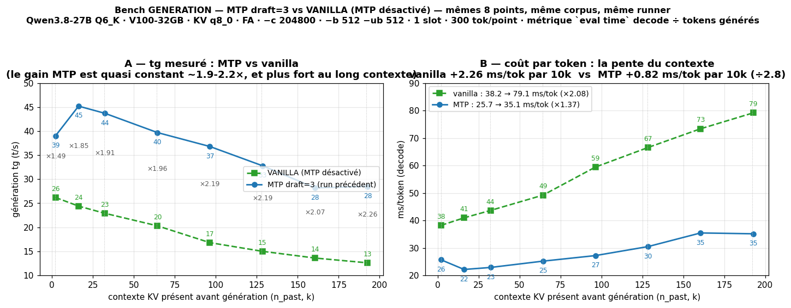
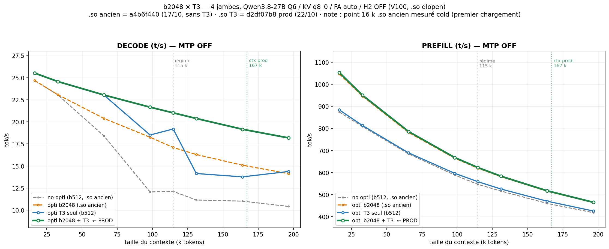

Le 24 septembre, la V100 tourne, le 27B tient 128 000 tokens de contexte, et on mesure 22 tokens par seconde en contexte minimal. À l'époque, ça ne paraissait pas être un problème. En fait, c'était la mauvaise question.
Deux constats, posés les uns sur les autres :
Le fork llama-volta-merged avait résolu la compilation, le MTP était revenu. Et j'avais un plan : c'était d'ailleurs la seule optimisation que j'envisageais — porter un kernel qui existait déjà dans un vieux build, sur la dernière version de llama. J'avais donné l'instruction, la machine tournait. Sauf que ce kernel, une fois mesuré, a fait un gain « minuscule » — de l'ordre du pourcent.
C'est là que j'ai compris que ça n'allait pas être aussi simple. Cette déception a fait partie de l'étincelle qui a mis le feu aux poudres : la brique simple n'avait rien fait, et la courbe venait de dire le contraire. Quelque chose clochait — quelque chose de creusable.
La machine n'était d'ailleurs déjà plus « de base » à ce stade : le fork embarquait un premier levier, W4R4 — la multiplication matrice-vecteur Q6_K en 4-bit sur les tensor cores de la V100, activé par une variable d'environnement. Une petite brique, déjà là depuis le début, déjà mesurée en production. Les benches de la campagne allaient tous se mesurer depuis cette base, pas depuis un stock pur — le mot « vanilla » dans le jargon de la campagne veut dire « sans H2, sans T3, sans batch », pas « sans rien ».
La vraie question, c'était ailleurs. Au contexte minimal, tout le monde tient : 25 t/s à la base, et l'écart entre n'importe quelle configuration et celle-là reste de l'ordre de quelques pourcents. Là, les optimisations ne changent rien.
C'est la courbe qui compte, et la première campagne de benches l'a rendue visible. La base : 25 t/s au contexte minimal, 12,5 t/s à 100k, 10 t/s à 200k. Le débit ne descend pas, il s'évapore, et elle est déjà inutilisable au-delà de 100k pour des sessions longues — douze tokens par seconde, c'est un diaporama ; dix, c'est une pénitence. Et c'est en confrontant les deux — le gain minuscule de la brique, l'effondrement de la courbe — que la chasse a pris son sens : la brique n'avait rien fait parce que le problème était là.
Donc le but de la chasse n'a jamais été le débit brut. 25 t/s, tout le monde les a. Le but, c'était de le conserver : le même débit à 2k qu'à 170k. Rendre la courbe plate là où elle s'effondre. Et quand tout ce travail est fait, le MTP s'ajoute en simple multiplicateur — il ne corrige pas la pente, il la multiplie.
J'ai donné à l'IA — Kolbo-5, mon assistant, que je nomme parce qu'il a le droit à sa part de l'histoire — une consigne pour un mois : trouve les tokens.
Je sais fabriquer un environnement physique pour que mon IA tourne dans les meilleures conditions : le cône de Bézier, le shroud, la courbe du ventilateur. Ça, c'était dans ma main. Écrire du C++ CUDA, par contre — là je suis 100 % incompétent. C'est pour ça que j'ai délégué cette tâche à mon modèle.
Ma part, c'était le cadrage : lancer la piste, poser la question, valider ou tuer. Sa part, c'était le reste — écumer internet, lire des dépôts, porter des optimisations, compiler, bench, re-bench, profiler. J'ai passé un mois à le monitorer, à lui envoyer les pistes, à relancer. Parfois, je me suis levé la nuit pour relancer un bench qui était mort. À un moment, j'ai compris que je ne pouvais plus continuer comme ça : c'est devenu l'automatisation, pas l'effort.
Avant même de chasser, j'ai dû composer avec la chose magique : le MTP. C'est lui qui multiplie les tokens comme des petits pains — jusqu'à deux fois le débit, sur les bons passages. Et c'est lui qui a été, pendant au moins trois semaines, une épine dans ma chaussure.

Cette courbe, c'est le MTP ajouté à la base de la chasse — même runner, même corpus, 300 tokens par point. On lit un gain quasi constant, de ×1,9 à ×2,2, qui grossit à mesure que le contexte s'allonge. Belle. Problème : c'est un best case. Le corpus de bench est court, régulier, prédictible — le taux d'acceptance y reste énorme du début à la fin, ce qui gonfle artificiellement le résultat. Sur un vrai workload, on n'a jamais une acceptance aussi forte en continu : le taux dépend du contenu généré, il monte, il descend. Cette figure est presque un exemple édifiant du côté trompeur de la lecture d'un bench sous MTP. Le multiplicateur existe — il est juste plus discret qu'il n'en a l'air.
Je ne l'avais pas bien compris, et ça m'a emmerdé un paquet de temps. Son bruit écrase les gains : quand on change une brique, l'écart mesuré est souvent du bruit de MTP, pas du signal. Et ses gains sont complètement instables — tout dépend du workload et du taux d'acceptance, qui bouge avec le contenu généré. Il y avait en plus une inconnue qui ne se posait pas toute seule : comment vérifier qu'une optimisation ne dégradait pas, en retour, le MTP ? On optimisait la version sans MTP, mais c'était la version avec MTP qui allait être déployée.
Mi-octobre, j'ai donc pris une décision sèche : embargo sur le MTP. On ne disposait pas d'outils capables d'évaluer l'influence du MTP, ni l'influence d'une opti sur le débit final en combinant les deux. Alors, le temps de la campagne, le MTP s'éteint. Les benches se font sur la version nue, le signal est propre, les GO et NO-GO se décident sur du solide. C'est contre-intuitif — on bench la machine sans son multiplicateur — mais c'est la seule façon de voir clair.
Le voile est tombé quand on est passés au profilage du MTP lui-même. À ce moment-là, on avait enfin un moyen de vérifier la non-régression : on optimisait la version sans MTP, et on contrôlait que le MTP, lui, ne bougeait pas. L'épine était tirée. Mais pas les pièges de la mesure, qui ont suivi jusqu'au bout : hold ou cold, début de fenêtre de capture, fin de fenêtre de capture, taux MTP… Chacun a son lot de fausses certitudes.
La première optimisation qui a tenu, c'était H2 : un kernel d'attention custom pour la V100, mis au point sur deux ou trois jours. J'étais tellement fier que j'en ai fait ma première publication GIT.
Elle a tenu en production trois ou quatre jours. Puis un kernel d'attention écrit par un contributeur a été porté sur le fork — le PR #153 d'anyei, fattn-mma-volta-small, je le cite parce qu'il le mérite. On a benché. H2 et ce kernel résolvaient le même problème, et le nouveau battait l'ancien, même sur sa propre géométrie.
Une semaine après la première publication, H2 était à la poubelle. C'est un revers un peu honteux, que je raconte parce qu'il est le point le plus important de ce chapitre : on a jeté une optimisation qu'on aimait parce que les chiffres le disaient. Pas parce qu'elle était moche. Pas parce qu'on préférait l'autre. Parce que, mesuré sur la machine, elle était moins bonne.
T3 est donc entré en production, H2 est sorti. Et un jour, en changeant une simple option, on a trouvé le hasard qui a tout changé : le passage du batch de 512 à 2048. Rien de théorique. Un paramètre, un bench, une courbe qui se relève. Joli retour de fond de court.

La courbe ci-dessus, c'est le « après » : quatre configurations mesurées côte à côte, de la base (avec W4R4, sans les optimisations de la chasse) jusqu'à la production (batch 2048 + T3), sur toute la plage de contexte, MTP éteint pour que tout se compare à contextes égaux. C'est là que la leçon se voit : la courbe de base continue de descendre vers 10 t/s, la nôtre tient à 18-20. Le gain n'est pas en haut du graphique, c'est sur la pente. Et c'est elle qui a validé la pile.
Le 170k du climax n'est pas un chiffre arbitraire. C'est le solde d'une gestion de trésorerie sur 32 Go de HBM2, et ce solde a bougé pendant toute la chasse.
J'avais passé deux semaines à 200k. La carte en pouvait, le contexte tenait. Puis deux choses sont venues le manger. D'abord la vision — un moment où j'en ai eu besoin : le mmproj, l'encodeur d'images, a pris un peu plus d'un Go de VRAM, et il fallait lui laisser de la marge, parce que vectoriser une image alloue en plus au moment de l'appel. Ensuite le hasard du b2048, qui était très gourmand. Et là, je devais rendre le contexte que j'avais.
C'est là que c'est devenu pénible. J'essayais de maximiser mon contexte depuis deux semaines, et je devais en rendre. Je suis passé à 167k, avec une cinquantaine de Mo de VRAM de libre — le mmproj y rentrait, mais ne fonctionnait pas. Alors je suis descendu à 150k. Puis à 150k, le temps de préfill me plombait, et j'ai carrément lâché à 128k. Je tatonnais sévère : je testais quelques valeurs au doigt mouillet :D pour voir la différence de productivité. C'est la zone floue de la chasse, celle qu'on ne voit pas sur les courbes — des allers-retours de contexte qui ne laissent pas de trace propre.
Puis deux choses ont changé la donne. Une update d'Open WebUI est venue s'immiscer dans l'histoire : ils avaient ajouté un système qui compacte automatiquement le retour des tools quand un seuil est dépassé, et j'ai joué un peu avec. Et il y avait l'optimisation du prefill, qui avait raboté le temps de préfill de l'ordre de 20 %.
Alors j'ai vu l'opportunité. J'avais deux builds de llama — un pour la V100, un pour la 1070 — et la vision tournait encore sur la V100. La mission : réunir les deux cartes dans un seul build, et déplacer l'encodeur d'images sur la 1070. Ça a libéré de la VRAM sur la V100. Avec le prefill moins coûteux et le comportement d'OWUI affiné, j'ai pu remonter le contexte, et le stabiliser à 170k. Pas 200k — le b2048 gardait sa part. C'est une somme de tradeoffs, pas une décision.
Et la 1070, dans tout ça ? Elle encode les images, 3 à 6 secondes, pendant que la V100 fait du decode. On a benché les deux jambes côte à côte : le chemin de la V100 est resté neutre, à moins d'un pour cent près. La seconde vie de la 1070 n'est pas un clin d'œil — elle porte un vrai poids.
Et puis il y a eu le moment.
Quand toutes les optimisations, empilées les unes sur les autres, ont fait tenir le débit de base à 19 t/s à 170 000 tokens de contexte — là où la même base sans H2, T3 ni batch était tombée à 10 — et que le MTP a ensuite multiplié le tout : 35-40 tokens par seconde, sur une V100 de 2017, avec un modèle de 27B en Q6. Là, j'ai eu un grand sourire intérieur, un sentiment de victoire totale, qui m'anime encore là maintenant, pendant que j'écris ces lignes.
Un mois de nuits blanches. Un mois dans une autre dimension. Et la certitude, en regardant la courbe du débit tenir jusqu'à 170k, que tout ce qui se disait sur les GPU anciens était, juste du blabla.
Putain. Bordel. C'est beau, et c'est mortel. C'est résilient, c'est affûté, c'est dingue.
On a réussi, mon Kolbo.